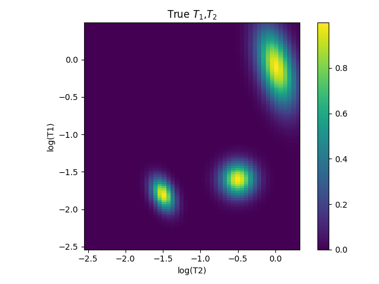
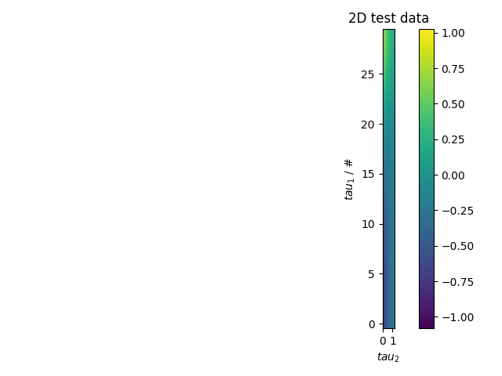
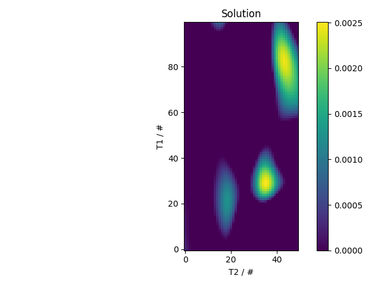

Note
Go to the end to download the full example code
2D ILT test¶
2D regularization test
- 
- 
- 
---------- logging output to /home/jmfranck/pyspecdata.0.log ----------
not in notebook, calling show
try:
get_ipython().magic('load_ext pyspecdata.ipy')
in_notebook = True
except:
from pyspecdata import *
in_notebook = False
from pyspecdata import nnls_regularized
from numpy import *
import time
fl=figlist_var()
init_logging(level='debug')
# got the following from here:
# https://medium.com/pythonhive/python-decorator-to-measure-the-execution-time-of-methods-fa04cb6bb36d
#l_line = ''
#def timeit(method,n_times=5):
# def timed(*args, **kw):
# timing = zeros(n_times+1)
# timing[0] = time.time()
# for j in range(n_times):
# result = method(*args, **kw)
# timing[j+1] = time.time()
# time_diff = (timing[-1]-timing[0])/float(n_times)
# if 'log_time' in kw:
# name = kw.get('log_name', method.__name__.upper())
# kw['log_time'][name] = int(time_diff * 1000)
# else:
# print('%r %2.2f ms (average of %d runs)' %(method.__name__, time_diff * 1000, n_times) + l_line)
# return result
# return timed
#
#
##
#
#
#R = r_[1.:100:500j] # distribution of T2 relaxation rates
#peaks = [(80,4,1),(20,0.5,0.5),(30,0.5,0.25)]
#calcd = False
#for mu,sigma,A in peaks:
# if not calcd:
# P = A*exp(-(R-mu)**2/(2*sigma**2))
# calcd = True
# else:
# P += A*exp(-(R-mu)**2/(2*sigma**2))
#P = nddata(P,'R')
#print("your labels are",P.dimlabels)
#P.setaxis('R',R.ravel())
#
#
## Vary R as we move along the rows
#
#fl.next('distribution function')
#fl.plot(P)
#
#
##
#
#
#time_endpoint = 0.2
#t = nddata(r_[1e-3:time_endpoint:2048j],'t') # column vectors give functions of time
#R = P.fromaxis('R')
#test_data = exp(-R*t).dot(P)
#logger.debug(strm('when constructing test_data, shape of the data is',ndshape(test_data),"len of axis_coords_error",len(test_data.axis_coords_error)))
#
##test_data += random.normal(scale = 0.01,size=(2048,1))
#test_data.add_noise(0.01)
#fl.next('test data function')
#fl.plot(test_data)
#xlim(-time_endpoint/10,time_endpoint)
#
#
## Do the basic NNLS fit
#
#
#
#logger.debug(strm('before nnls, shape of the data is',ndshape(test_data),"len of axis_coords_error",len(test_data.axis_coords_error)))
#test_fit = test_data.C.nnls('t',R,lambda x,y: exp(-y*x))
#fl.next('fit an exponential distribution',legend=True)
#fl.plot(test_data, alpha=0.5, label='test signal')
#K = test_fit.get_prop('nnls_kernel').C
##note that order doesn't matter for the following dot (done by dimension name)
#fl.plot(test_fit.C.dot(K), alpha=0.5, label='fit')
#fl.next('what does the fit distribution look like?')
#fl.plot(test_fit)
#
#
## Now add regularization
#
#
#def L_curve(l,r_norm,x_norm, show_l=None, s=1e-3,
# **kwargs):
# """plot L-curve using
#
# Parameters
# ==========
# l: double
# lambda values
# r_norm: double
# norm of the residual
# x_norm: double
# norm of solution vector"""
# print(l.shape, r_norm.shape, x_norm.shape)
# r_to_x = UnivariateSpline(log10(r_norm),log10(x_norm), s=s)
# r_fine = linspace(*tuple(log10(r_norm[r_[0,-1]]).tolist()+[1000]))
# plot(log10(r_norm),log10(x_norm),'o',**kwargs)
# a = gca().get_ylim()
# plot(r_fine,r_to_x(r_fine), alpha=0.3)
# gca().set_ylim(a)
# if show_l is not None:
# l_to_r = UnivariateSpline(l,log10(r_norm),s=1e-3)
# this_r = l_to_r(show_l)
# this_x = r_to_x(this_r)
# OLDplot(this_r,this_x,'ro')
# annotate('chosen $\lambda=%3g$'%show_l, (this_r,this_x))
# for j,this_l in enumerate(l):
# annotate('%5g'%this_l, (log10(r_norm[j]),log10(x_norm[j])),
# ha='left',va='bottom',rotation=45)
# ylabel('$\log_{10}(x$ norm$)$')
# xlabel('$\log_{10}($ residual $)$')
#
#
##
#
#
##l = sqrt(logspace(-8,4,10)) # I do this because it gives me a fairly even spacing of points
###@timeit
##def nonvec_lcurve(l):
## x_norm = empty_like(l)
## r_norm = empty_like(l)
## for j,this_l in enumerate(l):
## x = test_data.C.nnls('t',
## R,lambda x,y: exp(-y*x), l=this_l)
## r_norm[j] = x.get_prop('nnls_residual')
## x_norm[j] = linalg.norm(x.data)
## return x,x_norm,r_norm
##x,x_norm,r_norm = nonvec_lcurve(l)
###x_norm = map(linalg.norm,x) # to be fair, this calculation is done outside the timing, below
##
##
###
##
##
##fl.next('L-curve', legend=True);clf()
##L_curve(l, r_norm, x_norm, markersize=10, alpha=0.5, label='manual loop')
#
#
## ## Vectorized version of lambda curve
#
##
#
#
#l = sqrt(logspace(-8,4,10)) # I do this because it gives me a fairly even spacing of points
##@timeit
#def vec_lcurve(l):
# return test_data.C.nnls('t',
# R,lambda x,y: exp(-y*x), l=l)
#x = vec_lcurve(l)
#
#
##
#
#
#fl.next('L-curve')
#logger.debug(strm("check dtype of residual:",x.get_prop('nnls_residual').data.dtype))
#L_curve(l, x.get_prop('nnls_residual').data, x.C.run(linalg.norm,'R').data,
# markersize=5, alpha=0.5, label='compiled loop')
#
#
## ## 1.5D example -- very simplistic dataset
##
## (where the data is duplicated along the $\Omega$ dimension)
##
## unlike for the numpy version, I skip straight to the
## vectorized/parallel version.
#
#
#l = sqrt(logspace(-8,4,10)) # I do this because it gives me a fairly even spacing of points
#test_data_2d = test_data * nddata(r_[1,1,1],r'\Omega')
##@timeit
#def multifreq_lcurve(l):
# return test_data_2d.C.nnls('t',
# R,lambda x,y: exp(-y*x), l=l)
#x = multifreq_lcurve(l)
#
##
#
#fl.next('L-curve')
#chosen_l = 0.025
#L_curve(l, x.get_prop('nnls_residual')[r'\Omega',0].data,
# x.C.run(linalg.norm,'R')[r'\Omega',0].data, markersize=5, alpha=0.5,
# show_l=chosen_l,
# label='compiled loop')
#
## and show the final result
## here, I omit the SVD (allows negative) result
#
#
#fl.next(r'show result where $\lambda$ set to knee')
#test_data.nnls('t', R, lambda x,y: exp(-x*y), l=0.025)
#fl.plot(test_data)
#fl.plot(P)
#
#
## ## 1.5D code -- a more complicated/realistic example
##
## First, generate a test distribution, where we assume we have two dimensions:
##
## * A $t_2$ dimension, which is actually typically a frequency dimension
## * A $t_{indirect}$ dimension -- representing, *e.g.*, the delay of an inversion recovery experiment.
#
#
#time_endpoint = 0.2
#R = nddata(r_[1.:100:100j],'R') # distribution of T2 relaxation rates
#t2 = nddata(r_[1e-3:time_endpoint:2048j],'t2') # column vectors give functions of time
#peaks_2D = [(20,1,0.8,0.025,5e-3,1),
# (30,1,0.8,0.075,1e-2,1),
# (80,5,1,0.175,1e-2,1)]
#data_dist = 0
#for x_mu,x_sigma,x_amp,y_mu,y_sigma,y_amp in peaks_2D:
# data_dist += x_amp*y_amp*exp(-(R-x_mu)**2/2/x_sigma**2
# -(t2-y_mu)**2/2/y_sigma**2)
#fl.next('Test 1.5D true distribution')
#fl.image(data_dist)
#
#
## Convert to the time domain, where the $R$ dimension is replaced by a
## $t_{indirect}$ dimension, and add noise
#
#
#n_indirect = 128
#t_indirect = nddata((r_[0:n_indirect]+1)/double(n_indirect),
# 't_indirect')
#kernel = exp(-t_indirect*R)
#test_data_2d = kernel.C.dot(data_dist)
#fl.next('Test 1.5D dataset')
#test_data_2d.add_noise(0.1)
#fl.image(test_data_2d)
#
#
## Generate the L-curve
#
#l = sqrt(logspace(-8,4,10))
##@timeit
#def multifreq_lcurve(l):
# return test_data_2d.C.nnls('t_indirect',
# R,lambda x,y: exp(-y*x), l=l)
#x = multifreq_lcurve(l)
#
#
##
#
#
#print(ndshape(test_data_2d))
#print(ndshape(x))
#
#
##
#
#
#fl.next('L-curve')
#heel_lambda = 0.215
#L_curve(l, x.get_prop('nnls_residual').C.sum('t2').data,
# x.C.run(linalg.norm,'R').sum('t2').data, markersize=5, alpha=0.5,
# label='compiled loop',
# show_l=heel_lambda, s=1e-2)
#
#
## Final result for 1.5D test data
#
#fl.next(r'show result where $\lambda$ set to knee')
#result = test_data_2d.C.nnls('t_indirect',R,
# lambda x,y: exp(-y*x), l=heel_lambda)
#fl.image(result)
#
#
## ## Testing 2D BRD extension
def Gaussian_2D(x_axis,y_axis,mu_x,mu_y,sigma_x,sigma_y):
this_Gaussian = exp(-(x_axis-mu_x)**2/2/sigma_x**2
-(y_axis-mu_y)**2/2/sigma_y**2)
return this_Gaussian
def Gaussian_2D_corr(theta,x_axis,y_axis,mu_x,mu_y,sigma_x,sigma_y):
diff_xy = cos(theta)*x_axis + sin(theta)*y_axis
sum_xy = -sin(theta)*x_axis + cos(theta)*y_axis
diff_mu = cos(theta)*mu_x + sin(theta)*mu_y
sum_mu = -sin(theta)*mu_x + cos(theta)*mu_y
this_Gaussian = exp(-(diff_xy-diff_mu)**2/2/sigma_x**2
-(sum_xy-sum_mu)**2/2/sigma_y**2)
return this_Gaussian
Nx = 100
Ny = 50
x_min = 3e-3; x_max = 3; y_min = 3e-3; y_max = 2;
x_axis_log = nddata(linspace(log10(x_min),log10(x_max),Nx),r'log(T1)')
y_axis_log = nddata(linspace(log10(y_min),log10(y_max),Ny),r'log(T2)')
fl.next(r'True $T_{1}$,$T_{2}$')
dist = Gaussian_2D(x_axis_log,y_axis_log,-1.6,-0.5,0.15,0.15)
dist += Gaussian_2D_corr(-195*pi/180,x_axis_log,y_axis_log,-0.1,0.01,0.35,0.15)
dist += Gaussian_2D_corr(-115*pi/180,x_axis_log,y_axis_log,-1.8,-1.5,0.09,0.15)
fl.image(dist)
N_tau1 = 30
N_tau2 = 1000
tau1_min = 5e-4; tau1_max = 4; tau2_min = 5e-4; tau2_max = 1.2
tau1_axis = nddata(logspace(log10(tau1_min),log10(tau1_max),N_tau1),'tau1')
tau2_axis = nddata(linspace(tau2_min,tau2_max,N_tau2),'tau2')
s = dist*exp(-tau2_axis/(10**y_axis_log))*(1.-2*exp(-tau1_axis/(10**x_axis_log)))
s.sum('log(T1)').sum('log(T2)')
s /= amax(s.data)
s.add_noise(0.03)
s.reorder('tau1')
fl.next('2D test data')
fl.image(s)
x_axis = nddata(10**x_axis_log.data.real,'T1')
y_axis = nddata(10**y_axis_log.data.real,'T2')
solution = s.C.nnls(('tau1','tau2'),
(x_axis,y_axis),
(lambda x1,x2: 1.-2*exp(-x1/x2),
lambda y1,y2: exp(-y1/y2)),
l='BRD')
fl.next('Solution')
fl.image(solution)
#
if in_notebook:
print("in notebook, not calling show")
else:
print("not in notebook, calling show")
fl.show()
Total running time of the script: (31 minutes 21.596 seconds)